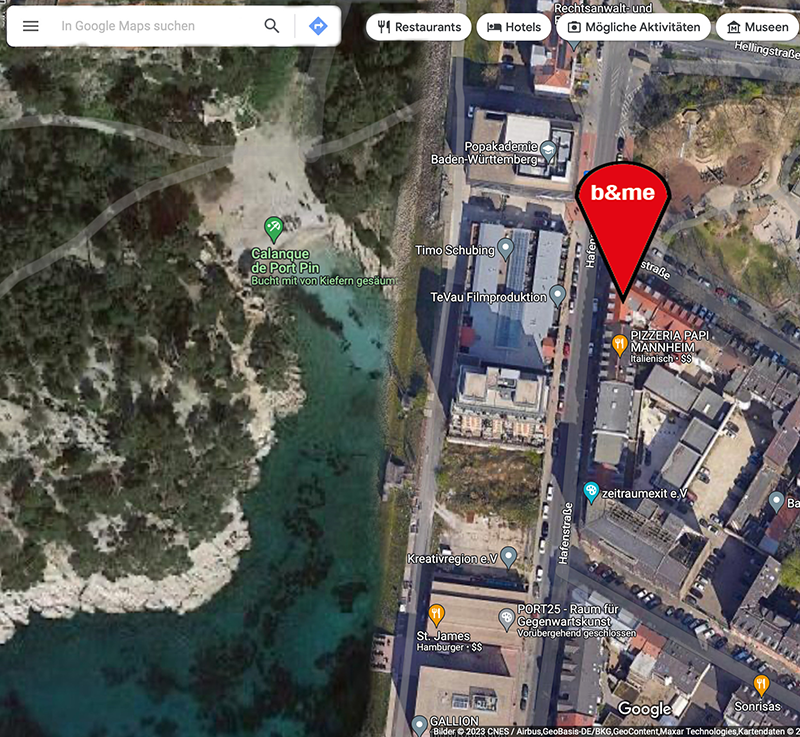

Direkt am Verbindungskanal gelegen ist das b&me ein unvergleich- bares Erholungsparadies.
Sonnen und Schwimmen im Kanal steht täglich auf der Tagesordnung. Dabei begleite ich dich natürlich.
Wenn du etwas in der Stadt erleben willst bist du hier im Jungbusch auch super aufgehoben!
Der Jungbusch ist bekannt für seine alternativen Kunst- und Kulturszene sowie seine vielen gemütlichen Bars und Cafés.
Ein Highlight in der Nähe ist die Alte Feuerwache, ein Kulturzentrum mit regelmäßigen Veranstaltungen wie Konzerten, Theateraufführungen und Ausstellungen. Auch das Museum Zeughaus C5, das die Geschichte der Stadt Mannheim und der Region darstellt, ist einen Besuch wert.
Für Naturfreunde bietet sich der nahe gelegene Luisenpark an, ein großer Park mit vielen Seen, Pflanzen und Tieren sowie zahlreichen Freizeitaktivitäten wie Bootfahren, Minigolf und einem Abenteuerspielplatz.
Auch kulinarisch hat der Jungbusch einiges zu bieten: Hier finden sich viele Restaurants mit internationaler Küche, Cafés mit leckerem Kaffee und Kuchen sowie Bars mit einer großen Auswahl an Getränken und Musik.
Zusammenfassend gibt es in der Nähe der Werftstraße 41 in Mannheim viele Möglichkeiten für einen abwechslungsreichen und interessanten Aufenthalt, egal ob man Kunst, Kultur, Natur oder gutes Essen genießen möchte.